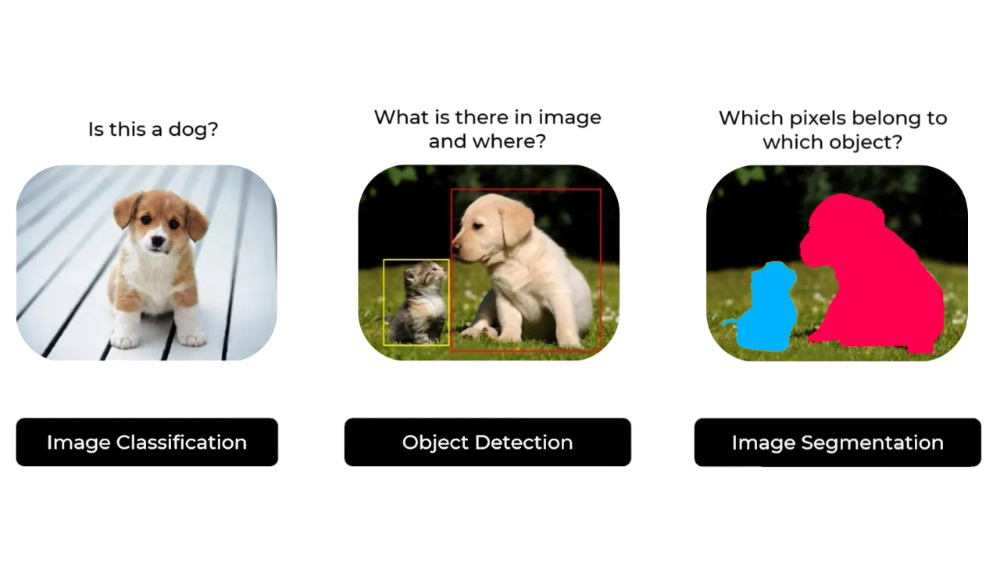

图像中的目标检测简介#
图像处理主要分为三大类：
分类（Classification）：判断图像中是否存在某个物体（例如：这是一张狗的照片吗？）。
检测（Detection）：定位图像中物体的具体位置（例如：狗在哪里？）。
分割（Segmentation）：识别属于某个物体的所有像素（例如：哪些像素属于这只狗？）。

图片来源：Ultralytics 文档
在 CNN 课程中，我们学习了使用经典 CNN 架构（带全连接层）解决分类问题，以及使用 U-Net 模型解决分割问题。
目标检测的解释较为复杂，因此本课程将重点介绍现有方法，并详细描述 YOLO 模型。
首先，我们将介绍两种主要检测器的区别：
两阶段检测器（Two-Stage Detectors）：包括 RCNN（基于区域的卷积神经网络） 系列模型。
单阶段检测器（Single-Stage Detectors）：包括 YOLO（You Only Look Once） 系列模型。
两阶段检测器#
顾名思义，两阶段检测器 通过以下两个步骤进行目标检测：
第一阶段：生成候选区域（Region Proposal），即可能包含目标物体的图像区域。
第二阶段：精化检测结果，包括确定物体类别和优化边界框（Bounding Box）的精确度。
图片来源：RCNN 论文
通常，两阶段检测器 检测精度高，适用于复杂场景，但速度较慢，无法实现实时处理。
最著名的两阶段检测器是 RCNN 系列模型。详情请参阅：RCNN 介绍博文
单阶段检测器#
单阶段检测器 仅需一步即可生成带标签的边界框（Bounding Box）。模型将图像划分为网格，并为每个网格单元预测多个边界框及其对应的概率。

图片来源：YOLO 论文
单阶段检测器 的精度通常低于两阶段检测器，但速度更快，能够实现实时处理，是当前应用最广泛的检测器类型。
非极大值抑制与锚框#
非极大值抑制（NMS）#
在目标检测中，模型可能会在同一物体上生成多个重叠的边界框（Bounding Box）。为了向用户提供最优的单一检测结果，非极大值抑制（NMS） 算法应运而生。
本课程不详细展开该算法，但可参考以下资源：

锚框（Anchor Boxes）#
锚框（Anchor Boxes） 是预先定义的边界框，均匀分布在覆盖图像的网格上。它们具有不同的长宽比和尺寸，以适应各种可能的物体大小。锚框减少了模型需要检测的位置数量，模型仅需预测相对于锚框的偏移量及物体存在的概率。
该方法能显著提升检测质量。详情请参阅：锚框介绍博文。
在实际应用中，锚框数量通常较多。下图展示了 RetinaNet 模型中 1% 的锚框：

扩展：基于 Transformer 的目标检测#
近期，Transformer 架构 被应用于目标检测领域。DETR 模型 使用 CNN 提取图像的视觉特征，然后通过 Transformer Encoder（带位置编码）利用注意力机制（Attention）分析特征间的空间关系。Transformer Decoder（不同于 NLP 中的解码器）以 Encoder 的输出（Keys 和 Values）和物体标签的嵌入（Queries）为输入，将嵌入转换为预测结果。最后，一个线性层处理解码器输出，生成物体类别和边界框（Bounding Boxes）。
详情请参阅：

该方法具有以下优势：
无需 NMS、锚框或候选区域生成，简化了模型架构和训练流程。
通过注意力机制（Attention），模型能更好地理解场景的全局信息。
但也存在一些缺点：
Transformer 计算量大，速度不及 YOLO 等单阶段检测器。
训练时间通常长于基于 CNN 的检测器。
注：在视觉任务中，Transformer 的训练时间通常长于 CNN。可能的原因是 CNN 具有针对图像的内在偏置，能更高效地学习图像特征，而 Transformer 作为通用模型，需从零开始学习。